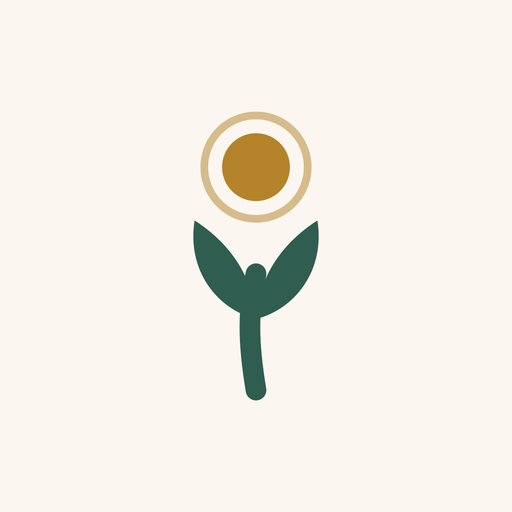

Nove dias com Nossa Senhora da Conceição, de 29 de novembro a 7 de dezembro, para chegar à festa de 8 de dezembro. Cerca de 3 minutos por dia.
Hoje
Rezar o dia de hojeUma novena são nove dias seguidos de oração, um pouco por dia, pedindo uma graça e caminhando com Maria. Esta novena prepara a festa da Imaculada Conceição, em 8 de dezembro, quando a Igreja celebra que Maria foi concebida sem pecado.
Ela começa sempre em 29 de novembro e termina em 7 de dezembro, véspera da festa. Cai bem no início do Advento: uma forma simples de esperar o Natal ao lado da Mãe de Jesus.
| 29 de novembro | 1º dia · Antes de tudo |
| 30 de novembro | 2º dia · Cheia de graça |
| 1º de dezembro | 3º dia · A alegria de Maria |
| 2 de dezembro | 4º dia · A casa de Nazaré |
| 3 de dezembro | 5º dia · Ela confiou |
| 4 de dezembro | 6º dia · Mãe de quem se afastou |
| 5 de dezembro | 7º dia · Toda bela |
| 6 de dezembro | 8º dia · Mãe que olha por você |
| 7 de dezembro | 9º dia · Amanhã é festa |
1º dia · 29 de novembro
Antes de Maria dizer sim, Deus já a amava: desde o primeiro instante da sua vida ela foi preservada do pecado, por pura graça. Antes de você fazer qualquer coisa, Deus também já amava você. A novena começa aqui: não no que você vai fazer, mas no que já lhe foi dado.
Pedido: Maria, me ensine a viver sabendo que Deus me ama.
Para meditar na Bíblia: Efésios 1, 3-6
Sinal da Cruz · reflexão · pedido e 3 Ave Marias · invocação
2º dia · 30 de novembro
O anjo não chamou Maria pelo nome. Chamou-a pelo que Deus tinha feito nela: cheia de graça. Nela não há nenhum canto vazio onde a graça não tenha chegado, e o fruto dessa graça é Jesus, que ela entrega a nós.
Pedido: Maria, peça ao seu Filho que me encha da graça dele.
Para meditar na Bíblia: Lucas 1, 26-33
Sinal da Cruz · reflexão · pedido e 3 Ave Marias · invocação
3º dia · 1º de dezembro
Grávida do Filho de Deus, Maria foi às pressas visitar a prima Isabel e, ali, começou a cantar o Magnificat. Quem está perto de Deus não fica pesado: fica com vontade de agradecer e de cantar.
Pedido: Maria, me dê um pouquinho da sua alegria para hoje.
Para meditar na Bíblia: Lucas 1, 39-56
Sinal da Cruz · reflexão · pedido e 3 Ave Marias · invocação
4º dia · 2 de dezembro
Deus preparou sua Mãe numa casa comum, entre pão, água e vizinhas. A santidade de Maria cabia numa cozinha, e a sua também cabe. Ofereça a Deus hoje o trabalho simples da sua casa.
Pedido: Maria, entre na minha casa e faça dela um lugar de paz.
Para meditar na Bíblia: Lucas 2, 39-40.51-52
Sinal da Cruz · reflexão · pedido e 3 Ave Marias · invocação
5º dia · 3 de dezembro
Maria não sabia como tudo ia acontecer. Perguntou, ouviu e disse sim mesmo assim. Confiar não é ter o plano inteiro nas mãos: é saber em Quem você se apoia.
Pedido: Maria, me ajude a confiar naquilo que ainda não entendo.
Para meditar na Bíblia: Lucas 1, 34-38
Sinal da Cruz · reflexão · pedido e 3 Ave Marias · invocação
6º dia · 4 de dezembro
A Igreja chama Maria de Refúgio dos pecadores: justamente a que nunca pecou é a que melhor acolhe quem pecou. Ninguém bate à porta desta Mãe e a encontra fechada. Hoje, confie a ela alguém que anda longe de Deus.
Pedido: Maria, traga de volta quem anda longe. Hoje confio a você uma pessoa especial.
Para meditar na Bíblia: Lucas 15, 11-24
Sinal da Cruz · reflexão · pedido e 3 Ave Marias · invocação
7º dia · 5 de dezembro
Há séculos os cristãos cantam para ela: toda bela és tu, Maria. É a beleza de uma vida inteira voltada para Deus, sem nenhuma mancha. E é também o que Deus sonha para a sua vida.
Pedido: Maria, que minha vida seja bela aos olhos de Deus.
Para meditar na Bíblia: Cântico dos Cânticos 4, 7
Sinal da Cruz · reflexão · pedido e 3 Ave Marias · invocação
8º dia · 6 de dezembro
Na cruz, Jesus nos deu a sua Mãe, e desde então ninguém está órfão na fé. Maria conhece o seu nome e a sua família. Coloque hoje debaixo do manto dela as pessoas que você ama.
Pedido: Maria, entrego a você as pessoas que amo. Guarde-as debaixo do seu manto.
Para meditar na Bíblia: João 19, 25-27
Sinal da Cruz · reflexão · pedido e 3 Ave Marias · invocação
9º dia · 7 de dezembro
Amanhã a Igreja celebra a Imaculada Conceição. Depois de nove dias, você chega com as mãos cheias de pequenos pedidos. Maria recebe todos e os leva a Jesus.
Pedido: Maria Imaculada, agradeço por você caminhar comigo até o seu Filho.
Para meditar na Bíblia: Apocalipse 12, 1
Sinal da Cruz · reflexão · pedido e 3 Ave Marias · invocação
Ó Maria concebida sem pecado, rogai por nós que recorremos a vós.
Se quiser, reze também a Salve Rainha. Se perder um dia, não desanime: reze o dia que faltou e continue.
Em nome do Pai, e do Filho, e do Espírito Santo. Amém.
Ave Maria, cheia de graça, o Senhor é convosco; bendita sois vós entre as mulheres, e bendito é o fruto do vosso ventre, Jesus. Santa Maria, Mãe de Deus, rogai por nós, pecadores, agora e na hora de nossa morte. Amém.
Ó Maria concebida sem pecado, rogai por nós que recorremos a vós.
Salve, Rainha, Mãe de misericórdia, vida, doçura e esperança nossa, salve! A vós bradamos, os degredados filhos de Eva; a vós suspiramos, gemendo e chorando neste vale de lágrimas. Eia, pois, advogada nossa, esses vossos olhos misericordiosos a nós volvei; e depois deste desterro mostrai-nos Jesus, bendito fruto do vosso ventre. Ó clemente, ó piedosa, ó doce sempre Virgem Maria. Rogai por nós, Santa Mãe de Deus, para que sejamos dignos das promessas de Cristo. Amém.
Quando começa a novena da Imaculada Conceição?
Em 29 de novembro. São nove dias de oração, até 7 de dezembro, véspera da festa da Imaculada Conceição, celebrada em 8 de dezembro.
O que é a Imaculada Conceição?
É a fé da Igreja de que Maria, por uma graça especial de Deus e pelos méritos de Jesus, foi preservada do pecado original desde o primeiro instante da sua existência. O dogma foi proclamado pelo Papa Pio IX em 8 de dezembro de 1854.
Nossa Senhora da Conceição e Imaculada Conceição são a mesma?
Sim. Nossa Senhora da Conceição é o nome popular da Imaculada Conceição. A imagem de Nossa Senhora Aparecida, padroeira do Brasil, é uma imagem da Imaculada Conceição, e Nossa Senhora da Conceição é também a padroeira de Portugal.
Posso começar a novena depois de 29 de novembro?
Pode. O importante é rezar um dia de cada vez, sem pressa. Se começar mais tarde, comece no 1º dia e siga até o 9º: a novena continua sendo uma preparação para a festa e um caminho com Maria.

A novena completa, um dia de cada vez, com todas as orações na tela e o lembrete diário para não perder nenhum dia. Gratuita, sem anúncios e sem conta.
Baixar o Oremos grátis